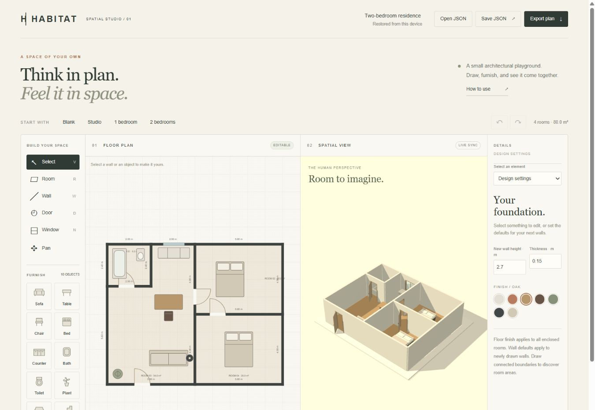

INDEPENDENT PROJECT / INTERACTIVE DESIGN
HABITAT
Draw a room. Arrange a home. See the same design from another angle.
Open the home sandbox ↗ · Source and setup ↗
Multi-storey concept designThe problem.
A floor plan is useful for editing, while a spatial view makes the same design easier to understand. HABITAT brings both into one workspace so a design does not have to be rebuilt separately for each view.
What was built.

Start with a blank plan or a furnished starter, draw walls, attach doors and windows, and arrange furniture. Dimensions, materials, and object properties remain visible while the design changes. The floor plan is the editing surface; the 3D view provides orbit and zoom controls.
Designs autosave locally and can be shared by link or downloaded as JSON. They can also be reopened, exported as a floor-plan image, and changed with undo and redo.
The hardest technical choice.
A versioned document stores wall vertices, wall dimensions, hosted openings, and catalog objects with stable IDs. The SVG plan and Three.js scene both derive their geometry from that document. A door or window belongs to a wall rather than floating independently over a picture.
The editor uses orthogonal walls and metric dimensions, while history operates on document edits instead of renderer state. This keeps the editable plan and spatial view synchronized.
Verification and proof.
The project README documents the tools, document format, checks, and limitations. Geometry and document tests cover structural edits, openings, persistence, and history independently from the renderers.
Honest limitations.
This is a concept-design sandbox, not construction documentation. It supports up to five floors, six editable templates, and eighteen catalog objects. Stairs are decorative.
The static app uses a pinned local copy of Three.js and needs no account, paid API, or application server. If 3D initialization fails, the floor-plan editor remains available.